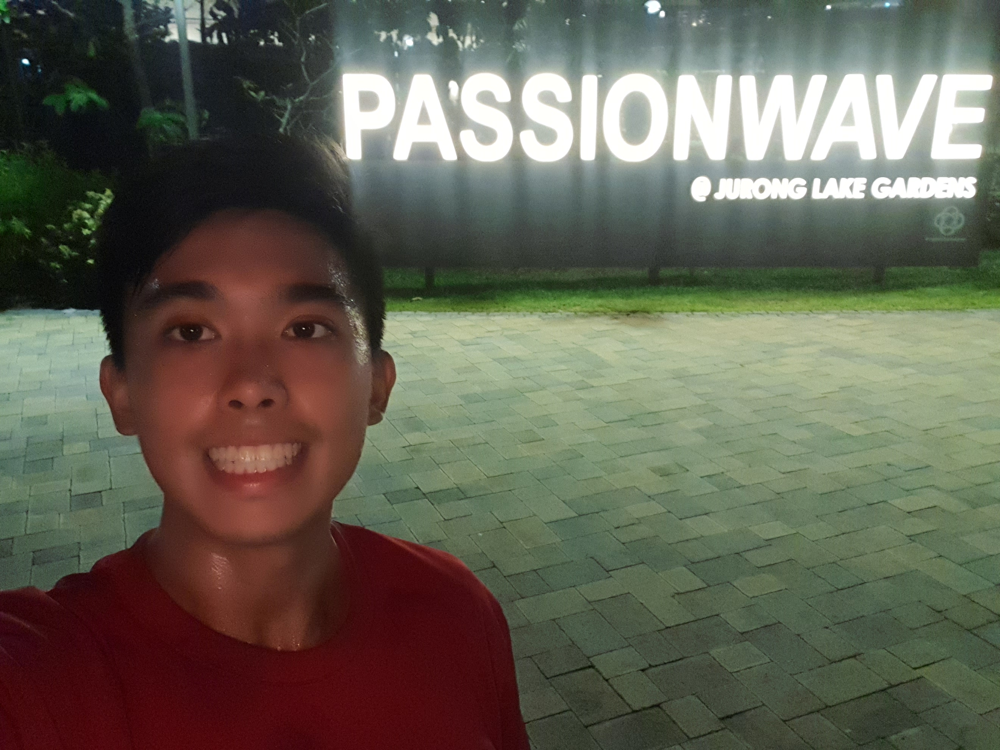
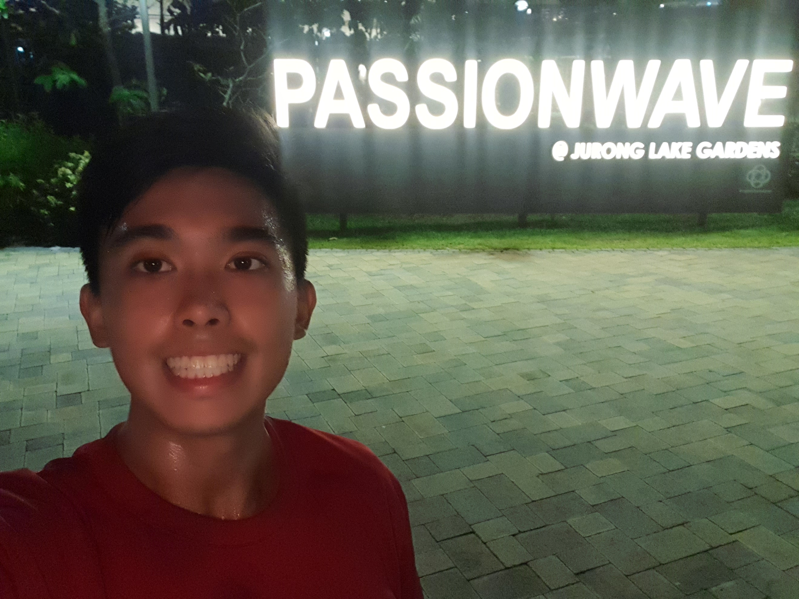
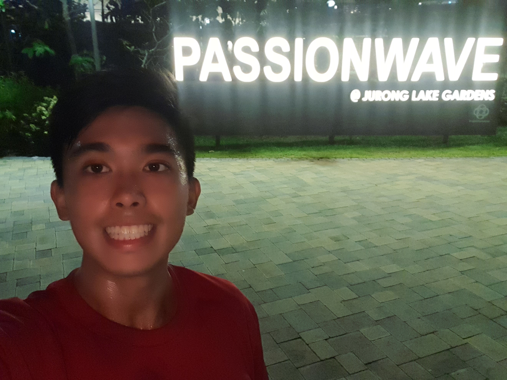
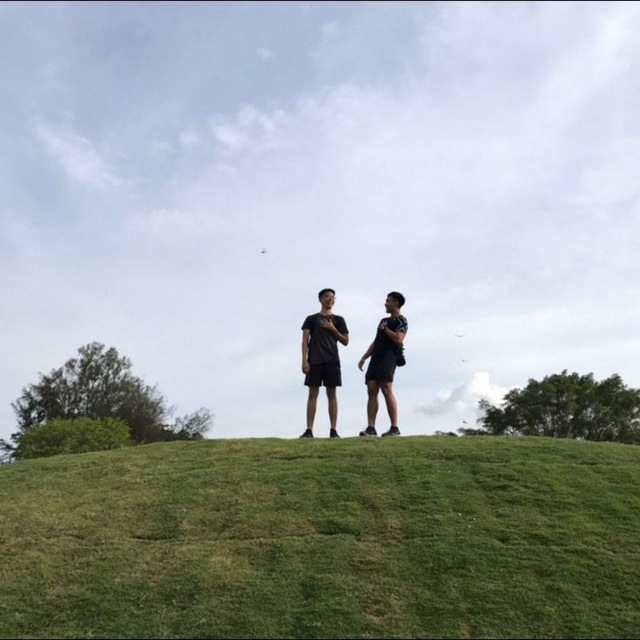
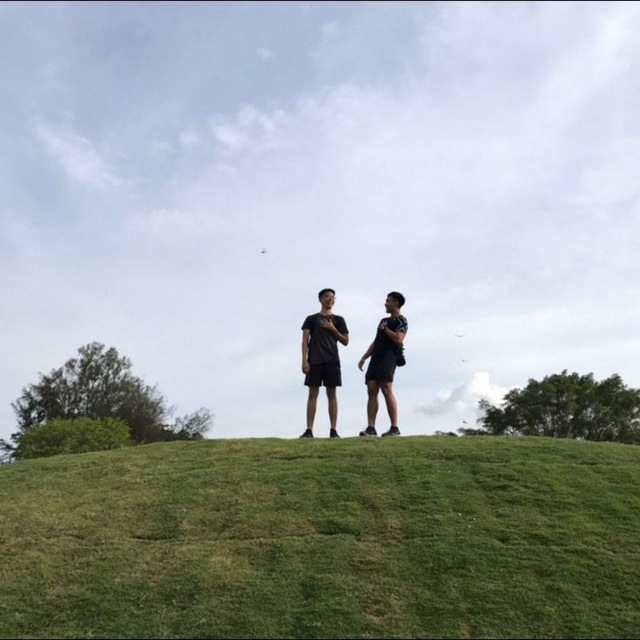
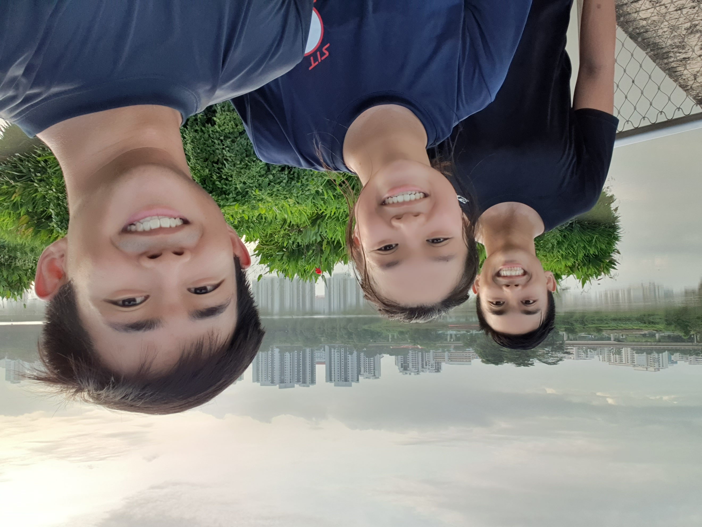
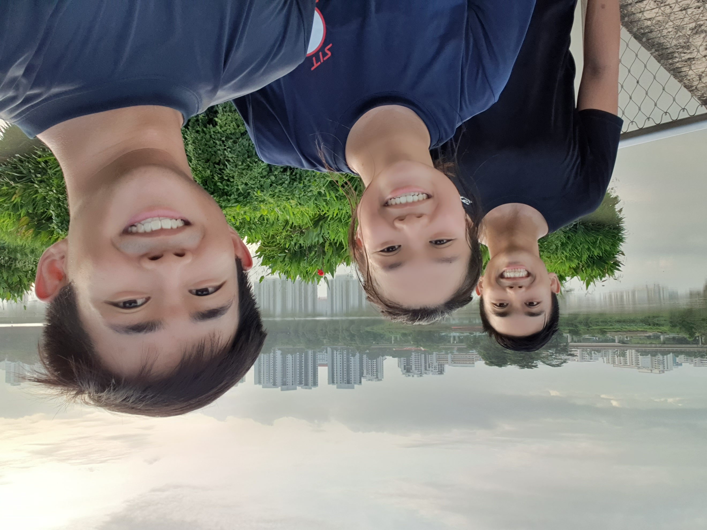

A Garden for everyone, anytime!
You can come for walks, runs, playgrounds, tai chi, gym, and even to Kayak!

Explore Jurong lake Gardens on a kayak at an affordable price!
Great for an activity with friends or for personal mastery of another skill.
Kayaks are available in singles and doubles or groups of 4!
For rates and booking, click here.
PAssion WaVe (PW) is part of People's Association (PA), and aims to bond people through water activities!

Looking for a quick swim post run?
Don't know where to train if its raining? ActiveSG@JLG is the place for you!
There is even a ladies corner in the gym! So ladies don't have to be afraid when you hit the gym!
For more info on bookings and membership, scan the qr code below!
Don't know what to do for the young ones? Fret not, the forest ramble is here for them!

Check out the grasslands at JLG where you'll leave feeling more at peace and with many more photos.
There is even a lone tree made out of fully used iron poles!
 


JLG boasts many different running routes against a beautiful scenary of Jurong lake
 

Be sure to check out Rasau walk when you are there, it lights up at night and is a beautiful boardwalk in the day.

To find out more, here is all you need to know about Jurong Lake Gardens
Visit All you need in 1 video!!
Click here to visit Nparks website